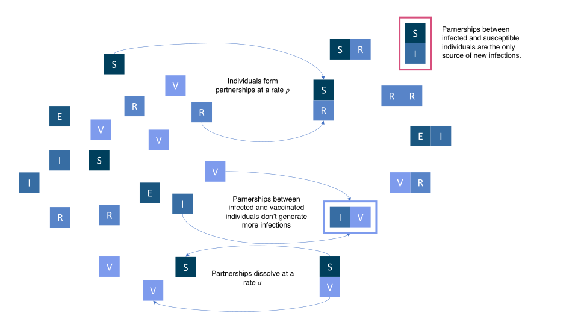
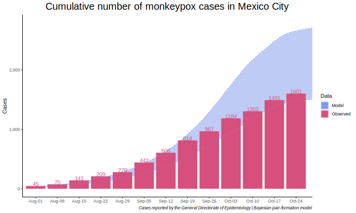
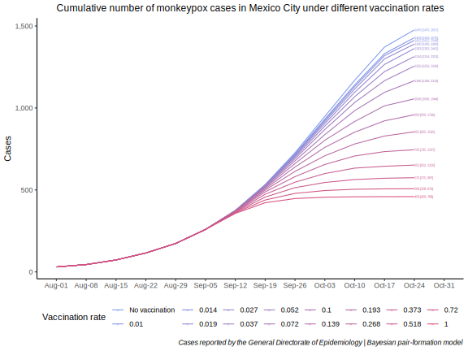
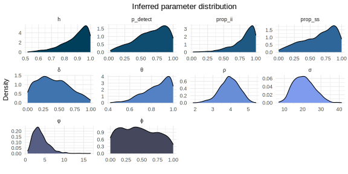

Modeling a vaccination campaign against monkeypox in Mexico City
![]()
Introduction
Since May 2022 the global outbreak of Monkeypox (MPX) has been reported in over 118 countries with most cases occurring among Men who have Sex with Men (MSM) (1–4). In Mexico, 98% of cases have been reported in men, most of these are aged 20-50 (5). To date 2,654 cases have been confirmed with most of them (60%) being reported in Mexico City, where the only laboratory in the country capable of testing for MPX (before October 6th) is headquartered (6). As the case count continues rising, activists have demanded more testing and access to vaccines. To date the country has not implemented a vaccination campaign.
The purpose of this document is to model the prevention opportunity of a vaccination campaign against MPX in Mexico City.
Methods
Data
Monkeypox cases
Weekly incident cases were obtained from the reports of the General Directorate of Epidemiology of Mexico (5).
Parameter information
Mathematical model

Our model is a pair-formation Susceptible-Exposed-Infected-Recovered (SEIR) system of differential equations adapted from (7). Briefly, in pair formation models the infection is driven by the rate of sexual partnership formation between individuals and transmission probabilities per sexual encounter within the partnership (2,8,9). In these models, single individuals (individuals that don’t form partnerships) don’t get infected nor infect others. A sexual partnership starts when two individuals have their first sexual encounter (rate \(\rho\) of partnership formation) and will continue having sexual encounters (at a rate \(\phi\)) until the partnership ends (rate \(\sigma\) of partnership dissolution). After a partnership dissolves, individuals become single again.
The disease is transmitted when two individuals have a sexual encounter with one of them being susceptible \(S\) and the other being infected \(I\). Once contagion takes place the susceptible individual becomes exposed (incubating) \(E\). An exposed individual eventually evolves to an infectious individual \(I\) at a rate \(\theta\). Infectious individuals recover at a rate \(\delta\). Recovered individuals are represented by the letter \(R\). Susceptible individuals can also become vaccinated at a rate \(\nu\). We assume that vaccinated \(V\) and recovered \(R\) individuals cannot be reinfected.
The differential equations representation for the model and the compartmental diagram can be found in Appendix 7.
Model Fitting
We used the weekly incident cases \(i_w\) of (5) for Mexico City for each week \(w\) and fitted them against the modeled incident cases for the same week. We assumed that only a fraction \(p_{\text{detect}}\) of all the cases corresponded to the observed cases, \(i_w\). And that the observed cases follow a Negative Binomial distribution parametrized by its mean \(p_{\text{detect}}\cdot I(w)\) and precision \(\tau\):
\[ i_w \sim \textrm{NegativeBinomial}\big(p_{\text{detect}}\cdot I(w), \tau\big). \] with
\[ \tau \sim \textrm{InverseGamma}(2,3), \quad \text{and}\quad p_{\text{detect}} \sim \textrm{Beta}(2,1). \]
Table 2 contains information regarding the priors for all parameters. Trajectories for the model were simulated via the DifferentialEquations package using the Rodas4 algorithm (10). Parameter fitting was done via No-U-Turn-Sampling (NUTS) with the Turing library in Julia version 1.8.2 (11–13). We used the \(\hat{R}\) and Gelman-Rubin’s test to assess convergence (14). All graphics were done in R version 4.2.1 (2022-06-23) using ggplot2 (15,16).
Estimation of the basic reproductive number, \(\mathcal{R}_0\)
TBD
Scenario simulation
We used the simulated posterior distribution of the model’s parameters to construct the baseline scenario with no vaccination \(\nu = 0\). We then repeated the simulations under different vaccination rate scenarios \(\{\nu_i\}\).
Code and data availability
Both the code for the model and the data can be found in our Github repository
Results
By October 30 2022 a total of 1601 cases have been reported for Mexico City. Figure 2 shows the reported number of incident cases as well as the inferred number of total incident cases in the city. The average probability of detection was 65.66% with 95% credible interval [13.53%, 98.39%]. Under the current scenario the epidemic is expected to extinguish by January 16 2023 with a total of 2790 [1529,2790] cumulative cases.

Figure 3 shows the different outcomes of cumulative cases under different vaccination rates \(\nu\). With vaccination, the overall cases would reduce up to 459 [459,788].

Discussion
Even under a small vaccination rate, the model shows a potential reduction in overall monkeypox cases in Mexico City.
Model
The compartmental diagram of the model is the following:

Where the variables are specified in Table 1.
| Variable | Definition |
|---|---|
| \(S\) | Single susceptible individuals |
| \(E\) | Single exposed individuals |
| \(I\) | Single infected individuals |
| \(R\) | Single recovered individuals |
| \(V\) | Single vaccinated individuals |
| \(P_{kl}\) | Partnership of two individuals in which one partner belongs to category \(k\) and the other to category \(l\) (e.g. \(P_{SI}\) represents a partnership between a susceptible \(S\) and an infected \(I\) individual). |
| \(C\) | Overall cummulative infective cases. Total numner of infective cases independent of partnership status over all of the pandemic |
| \(T\) | Overall total infective cases. Total number of infective cases at a moment in time. Independent of partnership status. |
| \(\textrm{Inc}\) | Overall incident cases. New cases independent of partnership status. |
The differential equation representation is given by:
\[ \begin{align} \frac{dS}{dt} &= -(\rho + \nu) S + \sigma (2 P_{SS} + P_{SE} + P_{SI} + P_{SR} + P_{SV})\\ \frac{dE}{dt} &= -(\rho + \theta) E + \sigma (P_{SE} + 2 P_{EE} + P_{EI} + P_{ER} + P_{EV})\\ \frac{dI}{dt} &= -(\rho + \delta) I + \theta E + \sigma (P_{SI} + P_{EI} + 2P_{II} + P_{IR} + P_{IV}) \\ \frac{dR}{dt} &= - \rho R + \delta I + \sigma (P_{SR} + P_{ER} + P_{IR} + 2 P_{RR} + P_{RV}) \\ \frac{dV}{dt} &= - \rho V + \nu S + \sigma (P_{SV} + P_{EV} + P_{IV} + P_{RV} + 2 P_{VV}) \\ \frac{dP_{SS}}{dt} &= \frac{1}{2}\rho \frac{S^2}{N} - (\sigma + 2 \nu) P_{SS} \\ \frac{dP_{SE}}{dt} &= \rho \frac{SE}{N} - (\sigma + \theta + \nu) P_{SE} \\ \frac{dP_{SI}}{dt} &= \rho (1 - h) \frac{SI}{N} + \theta P_{SE} - (\sigma + \phi h + \delta + \nu) P_{SI} \\ \frac{dP_{SR}}{dt} &= \rho \frac{SR}{N} + \delta P_{SI} - (\sigma + \nu) P_{SR} \\ \frac{dP_{SV}}{dt} &= \rho \frac{SV}{N} + \nu P_{SS} - (\sigma + \nu) P_{SV} \\ \frac{dP_{EE}}{dt} &= \frac{1}{2} \rho \frac{E^2}{N} - (\sigma + 2 \theta) P_{EE} \\ \frac{dP_{EI}}{dt} &= \rho \frac{EI}{N} + \rho h \frac{SI}{N} + \phi h P_{SI} + \theta P_{EE} - (\sigma + \theta + \delta) P_{EI} \\ \frac{dP_{ER}}{dt} &= \rho \frac{ER}{N} + \delta P_{EI} - (\sigma + \theta) P_{ER} \\ \frac{dP_{EV}}{dt} &= \rho \frac{EV}{N} + \nu P_{SE} - (\sigma + \theta) P_{EV} \\ \frac{dP_{II}}{dt} &= \frac{1}{2} \rho \frac{I^2}{N} + \theta P_{EI} - (\sigma + 2 \delta) P_{II} \\ \frac{dP_{IR}}{dt} &= \rho \frac{IR}{N} + \delta P_{II} + \theta P_{ER} - (\sigma + \delta) P_{IR} \\ \frac{dP_{IV}}{dt} &= \rho \frac{IV}{N} + \theta P_{EV} + \nu P_{SI} - (\sigma + \delta) P_{IV} \\ \frac{dP_{RR}}{dt} &= \frac{1}{2} \rho \frac{R^2}{N} + \delta P_{IR} - \sigma P_{RR} \\ \frac{dP_{RV}}{dt} &= \rho \frac{RV}{N} + \delta P_{IV} + \nu P_{SR} - \sigma P_{RV} \\ \frac{dP_{VV}}{dt} &= \frac{1}{2} \rho \frac{V^2}{N} + \nu P_{SV} - \sigma P_{VV} \\ \end{align} \tag{1}\] where \(N = S + E + I + R + V + \sum_{i,j\in\{S,E,I,R,V\}} P_{ij}\) represents the total number of individuals (MSM) in the population. Initial conditions for the model are given by:
\[ \begin{align} S(0) &= (N - \tilde{i}_w)\cdot p_{s},\\ I(0) &= \tilde{i}_w \cdot p_i,\\ P_{SS}(0) &= (N - \tilde{i}_w)\cdot (1 - p_{s}) \\ P_{SI}(0) &= (N - \tilde{i}_w)\cdot (1 - p_{i}) \end{align} \] with \(\tilde{i_w} = i_w / p_{\text{detect}}\). The rest of the initial values are equal to zero.
The parameters and their definitions are established in Table 2.
| Parameter | Definition |
|---|---|
| \(\rho\) | Partnership formation rate. |
| \(\sigma\) | Partnership dissolution rate. |
| \(\nu\) | Vaccination rate. |
| \(\theta\) | Incubation rate. |
| \(\delta\) | Infection recovery rate. |
| \(h\) | Probability of transmission per contact. |
| \(\phi\) | Contact rate per partnership. |
| \(\varphi\) | Precision of the observed incidence cases. |
| \(p_{detect}\) | Probability of being a detected case. |
| \(N\) | The total of MSM in Mexico City |
| \(p_{s}\) | The proportion of single susceptible cases at the beginning of the epidemic. |
| \(p_{i}\) | The proportion of single infected cases at the beginning of the epidemic. |
The total number of infected individuals at any time \(t\) can be estimated as:
\[ T = I + P_{SI} + P_{EI} + 2\cdot P_{II} + P_{IR} + P_{IV}, \tag{2}\] and the cumulative number of infected individuals (cumulative cases) is given by the solution to the differential equation:
\[ \frac{dC}{dt} = \theta \cdot (E + P_{SE} + P_{EE} + P_{EI} + P_{ER} + P_{EV}). \tag{3}\]
The number of incident cases at week \(w\), \(\textrm{Inc}(w)\) is given by the difference in cumulative cases Equation 3:
\[ \textrm{Inc}(w) = C(w+1) - C(w). \]
Parameter distributions
